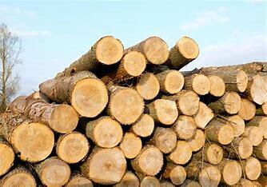

Deforestation is made to make space for aggriculture. Since people are quicky running out of space for farming, people have to cut down forests in order to make space for crops and animal grazing. These spaces ussually contain the crops that are grown and transported into the food you eat.
People cut down long paths of forest in order to make more available space to contrust roads for cars and for faster transportation.
People cut down the forests not only to make space for roads, and aggriculture but also for the wood. Paper especially is made from the wood that they cut down from deforestation. Also they build furniture for houses, build bridges, buildings, boats, and sports equipment such as bats, and skis.